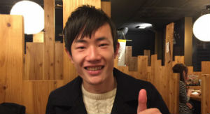

山本卓也 Takuya Yamamoto
初代部長 経済学部B3
大阪大学製麺部の初代部長。製麺歴5年。
「世界に製麺を広めたい」との思いから、渡米を決断。
現在、カリフォルニア大学アーバイン校に留学中。

製麺で世界は変わる！製麺が世界を変える！
ホーム > メンバー紹介
大阪大学製麺部の初代部長。製麺歴5年。
「世界に製麺を広めたい」との思いから、渡米を決断。
現在、カリフォルニア大学アーバイン校に留学中。
名誉顧問として、主にエンジニア面で活躍中。
製麺歴は1年だが、その技術は本物。
プログラミングと製麺の掛け合わせを日々研究中。
手付かずの小野式製麺機の復旧を行ない、本格的な製麺活動の火付け役となった。
製麺歴は3ヶ月だが、猛勉強によって歴の浅さを感じさせない技術を見せる。
広報部に所属し、製麺部の普及を担当。製麺歴3ヶ月。
大学院では教育に関して研究しながらも、製麺に次世代の教育要素があるのではないかとの思いで入部。